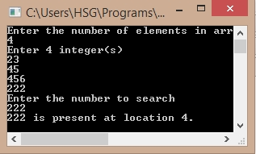

/*C Program for LinearSearch*/
#include<stdio.h>
#include<conio.h>
int main()
{
int array[100], search, c, n;
printf("Enter the number of elements in array\n");
scanf("%d",&n);
printf("Enter %d integers\n", n);
for (c = 0; c < n; c++)
scanf("%d", &array[c]);
printf("Enter the number to search\n");
scanf("%d", &search);
for (c = 0; c < n; c++)
{
if (array[c] == search){
printf("%d is present at location %d.\n", search, c+1);
break;
}
}
if (c == n)
printf("%d is not present in array.\n", search);
return 0;
}
Output:
